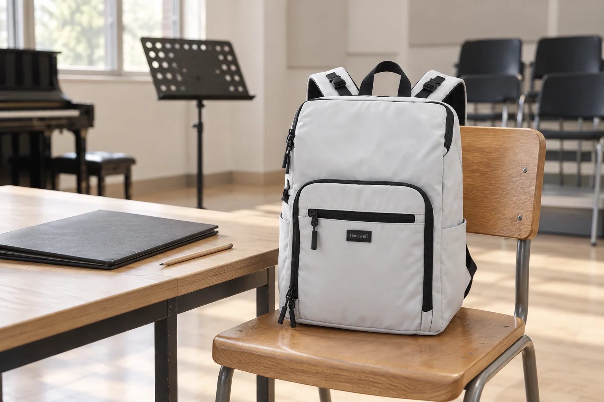

합창 연습 가는 날의 백팩: 악보는 두께보다 펼칠 순서

합창 연습에서 악보를 빨리 찾는 일은 페이지 수보다 순서와 관련이 있습니다. 가방에는 모든 곡이 들어 있는데 정작 지금 부를 곡이 뒤쪽에 있거나, 지난 연습의 메모가 다른 파일에 남아 있기도 합니다. 오늘 연습할 곡을 안내받았다면 출발 전에 파일을 한 번 펼쳐보세요. 종이를 반듯하게 운반하는 준비에 더해 연습 도중 무엇을 열고 어디에 표시할지까지 정할 수 있습니다.
오늘 사용할 판본과 곡 순서를 맞춥니다
같은 곡이라도 파트나 편곡, 페이지 구성이 다를 수 있습니다. 연습 안내에서 지정한 자료를 확인하고 자신의 파트에 맞는 악보를 순서대로 묶으세요. 여러 묶음을 가져간다면 제목을 구분할 수 있는 가벼운 표식을 붙이되 음표나 기존 메모를 가리지 않습니다. 이전 연습 자료를 전부 더하기보다 오늘 필요한 묶음과 별도 보관할 자료를 구분하는 것이 출발점입니다.
닫힌 파일에서 펼친 파일로 한 번 바꿔봅니다
가방에는 닫힌 파일이 들어가도 악보대 위에서는 페이지가 편하게 넘어가지 않을 수 있습니다. 집에서 사용할 순서로 몇 장을 넘겨보고 비닐 속지의 반사나 두꺼운 묶음 때문에 표시를 읽기 어렵지 않은지 살펴보세요. 페이지를 고정하는 방법은 악보와 파일의 구조에 맞춰 정합니다. 백팩에 넣기 전에는 다시 닫은 상태의 크기를 확인하고, 파일 모서리가 입구나 지퍼에 걸리지 않는지 봅니다.
연필과 작은 메모는 악보 밖의 정해진 자리로
연습 중 쓸 연필을 악보 페이지 사이에 끼우면 이동하면서 빠지거나 종이를 누를 수 있습니다. 뚜껑이나 케이스를 갖춘 필기구를 별도의 작은 필통에 넣고 파일과 함께 꺼낼 수 있는 위치에 둡니다. 지휘자나 진행자가 알려준 내용을 적을 작은 메모가 있다면 어느 곡의 기록인지 구분하세요. 가방은 악보대 주변 통로에 놓지 않고 현장에서 안내한 개인 물건 보관 위치를 따릅니다.
연습이 끝나면 빌린 자료와 내 자료를 나눕니다
마지막 곡을 부른 뒤에는 악보대와 의자 주변을 살피며 파일, 연필, 메모를 각각 회수합니다. 현장에서 빌린 악보가 있다면 개인 파일에 그대로 섞어 넣지 말고 반환 안내를 확인하세요. 다음 연습의 시작 페이지는 따로 표시해 두면 같은 파일을 처음부터 뒤적이지 않아도 됩니다. No.1223의 확인된 외부 크기는 가로 29 × 세로 40 × 폭 14cm이며, 악보 파일의 수납 여부는 실제 파일과 내부 공간을 함께 대조해야 합니다.
참고·안내
- Himawari No.1223 제품 정보
- 실제 Himawari No.1223 화이트 원본을 참조한 AI 연출입니다. 연습실과 악보 파일은 가상의 소품이며 특정 파일의 수납이나 실제 고객 사용 경험을 보여 주는 사진이 아닙니다.
자주 묻는 질문
악보는 전부 한 파일에 넣는 편이 좋나요?
오늘 연습 순서와 자료 구성을 기준으로 정하세요. 자주 쓰지 않는 곡까지 한꺼번에 넣으면 필요한 페이지를 찾기 어려울 수 있습니다.
연필을 악보 사이에 끼워 두어도 되나요?
이동 중 빠지거나 종이를 누를 수 있으므로 별도 필통에 두고, 연습할 때 악보와 함께 꺼내는 편이 정리하기 쉽습니다.